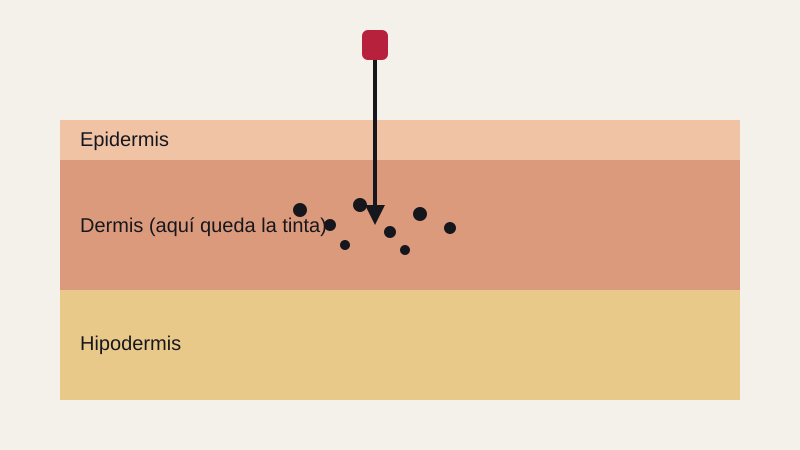

Caso curioso #1
El tatuaje más antiguo: la historia de Ötzi
Hace más de 5.000 años un hombre murió en los Alpes y quedó conservado en el hielo. Su piel guardaba decenas de tatuajes. ¿Para qué se los hizo?
Ver casoDatos curiosos del mundo del tatuaje.
Hace más de 5.000 años un hombre murió en los Alpes y quedó conservado en el hielo. Su piel guardaba decenas de tatuajes. ¿Para qué se los hizo?
Ver casoLa piel se renueva todo el tiempo, entonces ¿por qué la tinta se queda? La respuesta está en las capas de la piel.
Ver caso